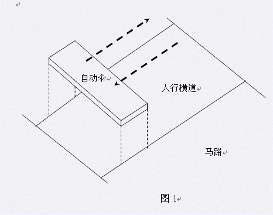

M国是个多雨的国家，尤其是P城，频繁的降雨给人们的出行带来了不少麻烦。为了方便行人雨天过马路，有关部门在每处人行横道的上空都安装了一种名为“自动伞”的装置。（如图1所示）  图1 每把自动伞都可以近似地看作一块长方形的板，厚度不计。这种伞有相当出色的吸水能力，落到上面的雨水都会完全被伞顶的小孔吸入，并通过管道运走。不下雨时，这些伞闲置着。一旦下雨，它们便立刻开始作匀速率直线往返运动：从马路的一边以固定的速率移动到另一边，再从另一边以相同的速率返回，如此往复，直到雨停为止。任何时刻自动伞都不会越过马路的边界。有了自动伞，下雨天没带伞的行人只要躲在伞下行走，就不会被雨淋着了。 由于自动伞的大小有限，当需要使用自动伞过马路的人比较多时，一把自动伞显然是不够的，所以有关部门在几处主要的人行横道上空安装了多把自动伞。每把自动伞的宽度都等于人行横道的宽度，高度各不相同，长度不一定相同，移动速率也不一定相同。 现在已知一处人行横道的详细情况，请你计算从开始下雨到T秒钟后的这段时间内，一共有多少体积的雨水降落到人行横道上。
| F.A.Qs | Home | Discuss | ProblemSet | Status | Ranklist | Contest | 入门OJ | ModifyUser Xeonacid | Logout | 捐赠本站 |
|---|